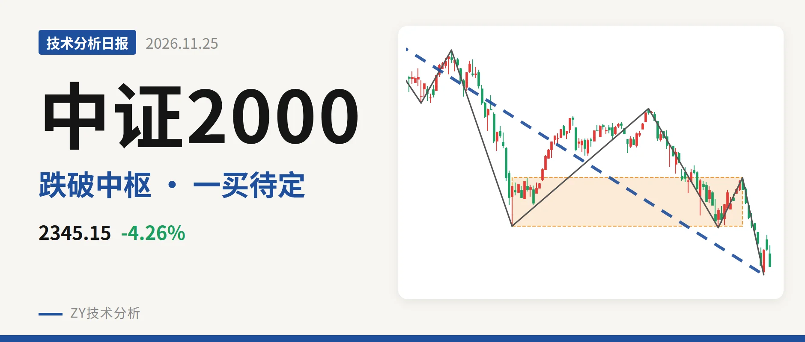
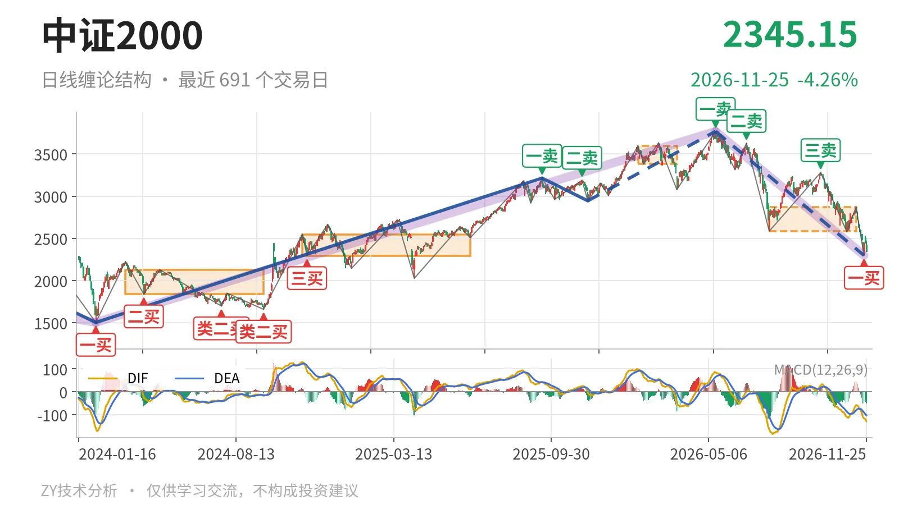

中证2000｜跌破日线中枢下沿2585点

最近日线中枢 2585.35—2872.13点，收盘位于中枢之下
一句话：日线仍处下跌段，反抽若不过2585点，仍有三卖风险。
📉 走势结构：5月14日以来下跌段未结束
日线仍处在5月14日开始的下跌段里，5月14日至11月23日的日线下跌线段从3768.08点跌至2297.27点，内含7笔，还没有结束。更大级别上，同一区间下跌走势跌幅约39.0%，也在延续。2024年2月6日至2025年9月18日的日线上涨线段已经结束；2025年11月21日至2026年5月14日的上涨段把指数从2944.56点推到3768.08点，其后指数再次回到3768点下方，当前仍在这波回落结构里。

🧭 中枢位置：跌破最近中枢下沿，中枢下移
11月25日收在2345.15点，已经位于最近日线笔中枢下方。该中枢是7月21日至11月12日形成的2585.35—2872.13点，尚未完成；收盘低于下沿约240点、幅度约9.3%。与1月26日至3月23日的3381.36—3593.19点中枢相比，最近中枢明显下移，中轴也由3487.28点降到2728.74点。当前价格还回到2024年11月12日至2025年6月23日的2293.12—2547.90点中枢内部，但更贴近下沿2293点。
🔻 买卖点：卖点逐级下移，一买待验证
下跌结构里，卖点一个比一个低。5月14日一卖3768.08点、6月23日二卖3626.48点、9月22日三卖3280.29点依次下移；9月22日之后反弹到11月12日2872.13点，也未重新站上3280点。11月23日出现日线笔一买2297.27点，11月24日至25日只有两根K线，最高2533.82点、收盘2345.15点，反抽幅度有限。线段级别的11月23日类二买2297.27点所在的5月14日至11月23日下跌线段还在延续，只能算暂定的类二买；若后续跌破2297点一线，日线笔一买会被破坏，买点结构降为更小级别。

⚖️ 背驰：面积收缩但DIF未背离
最新一笔较前一波下跌出现绿柱面积收缩，但DIF端没有同步抬高。11月12日至11月23日下跌笔从2872.13点跌到2297.27点，绿柱面积137，DIF低点-115.7；9月22日至11月2日下跌笔绿柱面积873，DIF低点-108.5。价格由2576.02点继续新低至2297.27点，绿柱面积却由873缩到137，面积收缩明显；但DIF低点由-108.5下移到-115.7，没有出现“新低不新弱”的完整信号，只能算面积背驰。
📍 关键位置：反抽不过2585点仍有三卖压力
最近的结构观察位在2585点一线，这是最近日线笔中枢下沿2585.35点。当前反抽若回不到2585点上方，可能对7月21日至11月12日中枢构成三卖；若重新站上2585点，再看2872点能否收复，回落更可能转为中枢扩展。下方2293点一线与11月23日一买2297.27点接近，若被跌破，日线一买破坏，下跌段继续。弱在价格未回到中枢下沿、DIF端也未背离，结构偏弱。
⚠️ 本文为基于公开行情数据的缠论技术结构记录，由程序自动计算并生成，仅供学习交流，不构成任何投资建议。市场有风险，投资需谨慎。